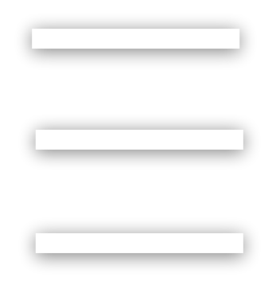

<header class="cabecalho ff-verdana">
  <div class="botao-cabecalho link" onClick="history.go(-1)">
    
  </div>
  <div class="logo link" routerLink="menu">
    
  </div>
  <div class="botao-cabecalho link">
    
  </div>
</header>
